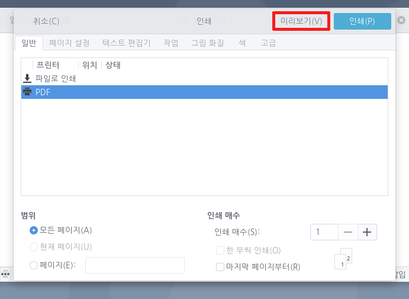

텍스트 편집기로 인쇄하려면 프린터를 연결하고 구성해야 합니다. 이 작업을 수행하지 않은 경우 GNOME 인쇄 도움말을 참조하시기 바랍니다. 텍스트 편집기를 사용하면 파일과 용지에 인쇄할 수 있습니다.
인쇄창 열기
인쇄와 관련된 모든 작업은 인쇄창을 통해 이뤄집니다. 인쇄창은 아래의 절차에 따라 열 수 있습니다.
1. 텍스트 편집기 상단  버튼 클릭 혹은 F10키보드
2.
버튼 클릭 혹은 F10키보드
2.  버튼을 클릭하여 인쇄창을 엽니다
단축키 Ctrl + P 를 사용하여 인쇄창을 열 수 있습니다.
버튼을 클릭하여 인쇄창을 엽니다
단축키 Ctrl + P 를 사용하여 인쇄창을 열 수 있습니다.
미리 보기
문서를 인쇄하기 전에 인쇄 미리 보기를 사용하여 인쇄될 문서의 모양을 미리 볼 수 있습니다. 문서를 미리 확인하기 위해서는 인쇄창 상단의 [미리보기(V)] 버튼을 클릭합니다. 문서 미리 보기는 파일과 동일한 탭에서 열립니다. 문서 미리 보기 탭의 맨 위에 있는 도구 모음에서 탐색 단추 및 도구를 사용하여 이 미리 보기를 확인할 수 있습니다. 문서로 돌아가려면 [미리 보기 닫기]를 누릅니다.
용지에 인쇄
로컬 또는 원격 프린터를 사용하여 문서를 용지에 인쇄할 수 있습니다. 파일을 인쇄하려면 다음을 수행합니다.
1. 인쇄창에서 [일반] 탭을 선택합니다.
2. 사용 가능한 프린터 목록에서 원하는 프린터를 선택합니다.
3. 상단의 [미리보기(V)] 버튼을 사용하여 파일을 미리 볼 수 있으며, 설정이 완료되면 [인쇄(P)]를 클릭하여 파일을 프린터로 보냅니다.
[페이지 설정] 탭에서 레이아웃 및 용지 옵션을 선택할 수도 있습니다. 이 설정은 GNOME 프로그램 전체에서 사용할 수 있으므로 레이아웃 및 용지 옵션 도움말을 참조하시기 바랍니다.
여러 복사본과 지정된 범위 간 인쇄
범위 및 복사본 옵션을 설정하여 다음 작업을 수행합니다.
인쇄 순서 정하기 인쇄할 페이지를 일정한 순서로 설정합니다.
특정 페이지 인쇄 인쇄할 페이지를 지정합니다.
파일 인쇄
텍스트 편집기를 사용하여 파일로 인쇄할 수도 있습니다. 문서를 다른 형식의 파일로 인쇄하려면 다음을 수행합니다.
1. 인쇄창의 [일반]탭에서 [파일로 인쇄]를 선택합니다.
2. 다음 파일 형식에 대해 인쇄 옵션을 선택합니다.
- Portable Document Format(.pdf)
- PostScript(.ps)
- Scalable Vector Graphics(.svg)
3. [인쇄]를 클릭하여 문서를 파일로 인쇄합니다.
PDF 인쇄
텍스트 편집기를 사용하여 pdf 문서를 생성할 수 있습니다. 문서를 pdf형식의 파일로 인쇄하려면 다음을 수행합니다.1. 터미널에서 아래의 명령어를 사용해 pdf 프린터를 설치합니다.sudo apt install cups-pdf sudo apt install system-config-printer2. 인쇄창을 열고 [일반] 탭을 확인하면 PDF 프린터가 생성된 것을 확인할 수 있습니다. 3. 원하시는 설정을 마친 후, [인쇄]를 클릭하여 문서를 파일로 인쇄합니다.